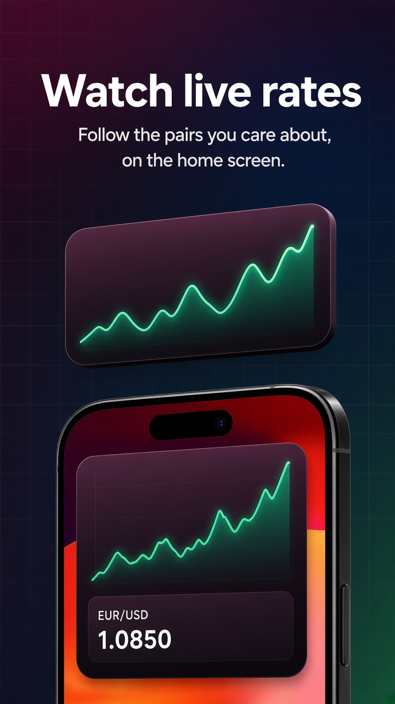
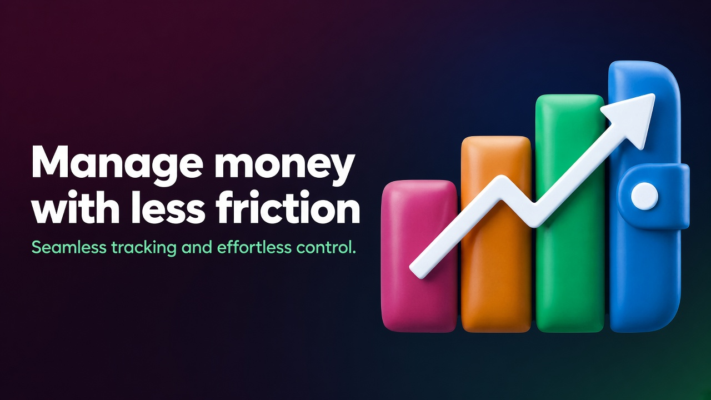

The idea
Personal finances, kept in one place.
Finance helps you hold personal money in view without complicated tables. You see what comes in, what goes out, what is set aside, and what the picture looks like over time.
iPhone · Personal finance
Plan a budget, follow spending, keep accounts in different currencies, and watch the rates you choose. Set money aside for goals and see the picture more clearly — without heavy spreadsheets or extra steps.
The idea
Finance helps you hold personal money in view without complicated tables. You see what comes in, what goes out, what is set aside, and what the picture looks like over time.
Features
Add income and expenses, sort them into categories, and see where money goes. Keep more than one account, use different currencies, move money between accounts, and set operations that repeat.
Currencies and rates
Each account keeps its own currency. Income, spending, and transfers stay in that currency, so mixed amounts are not folded into one total. Pick the pairs you care about and follow the rate in the app and on a Home Screen widget.

A preview of rate watching. In the app the rate refreshes about once a minute, and you can turn on a notice when a watched rate moves.

Learning
The Learning section collects clear notes on everyday money. No heavy theory — explanations, examples, and approaches you can try.
See necessary spending, everyday purchases, and goals as separate parts of the same month.
Begin with a small amount you can repeat, even when income is modest.
Learn how a reserve works, how to pause a purchase you did not plan, and how to approach a large goal or a debt one step at a time.
Clear money, clearer choices
You do not have to earn more before you handle money more clearly. See where it goes, keep each currency in its own account, follow the rates you choose, and move toward the goals you set.
Get Finance on the App Store